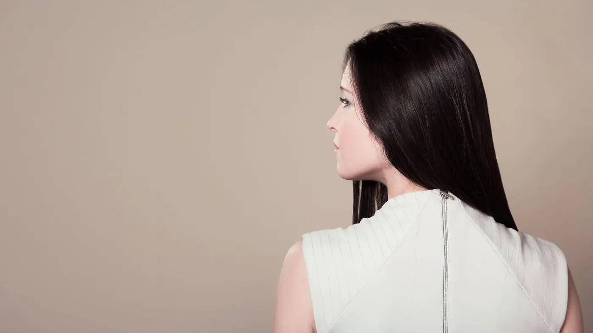

Хочу висловити вам величезну подяку за таку неймовірну процедуру! У вас просто золоті руки! Справжня магія - зробити все настільки якісно та ще й так швидко. Волосся тепер ідеально гладеньке, шовковисте та сяюче, дивитися на цей результат - одне задоволення! Обов’язково прийду до вас ще не один раз з великим задоволенням. Дякую за вашу працю та майстерність!
Головна / Відгуки
Ваші відгуки
Повідомлення, якими клієнтки діляться з Оленою після процедур. Зібрані з актуального «відгуки» в Instagram - без змін у змісті.

Лена, хочу залишити відгук. Я сьогодні помила голову і просто в шоці! Що це за крута процедура? Кератин + холодне відновлення - це краще, що траплялось з моїм волоссям! Навіть моє супер пористе, ламке та сухе волосся виглядає здоровим і наповненим! Воно і на дотик таке приємне, і розчісування стало безпроблемним! Обожнюю, дякую! Прям дуже задоволена!
Щиро дякую за професійно виконаний Airtouch! Ця техніка вимагає величезного терпіння та майстерності, і результат перевершив моє очікування, якість волосся після освітлення просто вражає - м’яке та доглянуте. Дякую за красу та ваш високий професіоналізм! Обов’язково повернуся знову.
Доброго дня! Хотіла залишити відгук про зроблену процедуру, а саме кератин. Це чистий кайф! Волосся після сушіння феном - ідеально рівне, блискуче, гладеньке. Неможливо намилуватися) Дуже вам дякую за таку красу.
І все ж таки не можу не подякувати тобі. Я йшла до тебе за рівним сяючим волоссям, а отримала бонусом такий довгоочікуваний вихід з чорного. Тепер я маю шикарне, а саме головне здорове шоколадне волосся. Ти краща!
Я вчора наводила марафет, подумки дякувала тобі за твої золоті ручки… Дякую тобі!
Кожного разу після вашого чаклування над моїм волоссячком в мене такі думки, що круто, як ніколи… Ні..))) Круто - як завжди!))) І знову - Богиня. Велике дякую! Приємно, швидко, гарно!
Доброго ранку. Лена, волоси масло. Я здогадувалась, що результат має бути саме таким, але реально це вперше миєш голову, а воно не плутається. Легко розчісується. Супер. Дякую.
Як завжди на вищому рівні. Дякую тобі! Це просто шось нереальне, мені дуже подобається, дякую велике.
Це дійсно дуже круто, вони тяжкі, розсипчасті та блискучі. І це я лише 1 раз спробувала. Дякую вам, що все ж таки дали мені цю маску. Якщо б ви пощупали зараз моє волосся після миття, ви були б в шоці.
Добрий ранок) Це шедевр просто. Я дуже задоволена, ранком стала, волосся рівненьке, м’якеньке і не торчить) Дякую.
Все прекрасно, дякую, ручки золоті, саме такий результат і хотілось.
Доброго ранку) Лєн, догляд класний, волоссячко приємне на дотик, я ще відрізала сухі кінці, то взагалі краса)) Дякую)
Альоночка, милуюся ними, від дзеркала не відходжу.
Велика вдячність за прекрасну роботу, результат неймовірний, відчувається професіоналізм і майстерність, дякую за красу)
Моє гарне волосся! Прийшла думка… що як закінчиться дія процедури, я обов’язково ще зроблю ламінування та ботокс волосся!!! Хоча це задоволення не з дешевих… ви не пожалкуєте, дівчата.
Ще більше відгуків - в Instagram, в актуальному «відгуки». @olena__yarova
Хочете такий самий результат?
Напишіть Олені в Instagram: вона подивиться фото вашого волосся, порадить процедуру і підбере зручний час.